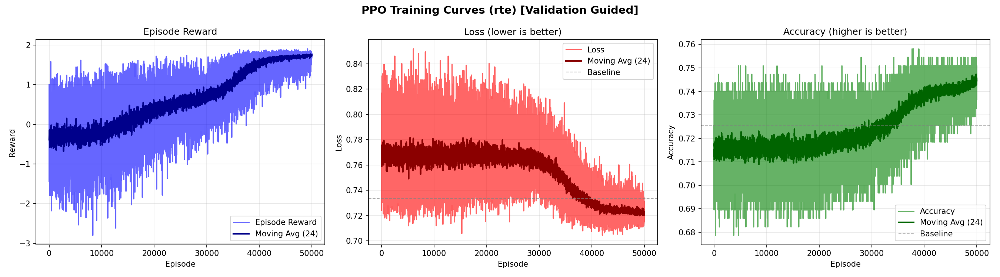
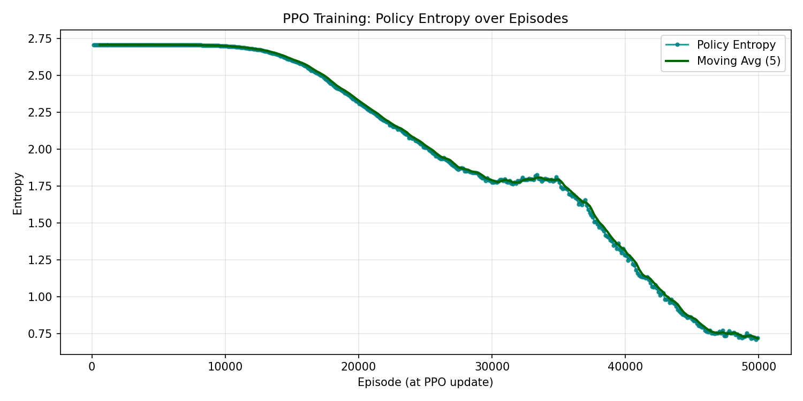

Protocol: pure-original plaintext baseline and all Stage-1 reward/final-eval checks use validation_full only. No train split, proxy split, or max-scaling noise environment is used for the reported final eval.
| final selected GELU | [1, 1, 1, 4, 4, 1, 1, 1, 1, 1, 1, 1] |
| final selected Softmax | [4, 3, 2, 2, 2, 3, 3, 2, 3, 3, 4, 3] |
| final selected cost | 33.00 |
| final selected reward | 1.852915 |
| confirmed episode | 38040 |
| raw reward-best GELU | [1, 1, 1, 4, 4, 1, 1, 1, 1, 1, 1, 1] |
| raw reward-best Softmax | [4, 4, 2, 2, 2, 3, 3, 3, 3, 3, 4, 4] |
| raw reward-best cost | 34.50 |
| raw reward-best reward | 1.901732 |
Selection note: checkpoint best_config is raw PPO reward-best; final selected config comes from global/search best logged at training completion
| Config | Loss | Accuracy | Accuracy | Loss delta | Loss delta % | Constraints pass |
|---|---|---|---|---|---|---|
| baseline | 0.733301 | 0.725632 | 0.725632 | - | - | - |
| final selected | 0.724735 | 0.747292 | 0.747292 | -0.008566 | -1.168% | True |
| raw reward-best | 0.716347 | 0.754513 | 0.754513 | -0.016954 | -2.312% | True |
Constraints: loss <= 0.736967, metric1 >= 0.722004, metric2 >= 0.722004.
The PNGs below are the full 50,000-episode Stage-1 training curves produced by the run.


| Series | N | Min | Mean | P50 | P95 | Last | Last1000 mean |
|---|---|---|---|---|---|---|---|
| reward | 50000 | -2.800465 | 0.611457 | 0.589509 | 1.752107 | 1.727244 | 1.732843 |
| loss | 50000 | 0.704365 | 0.754637 | 0.755205 | 0.794361 | 0.729995 | 0.722574 |
| metric1 | 50000 | 0.678700 | 0.724424 | 0.722022 | 0.747292 | 0.743682 | 0.744390 |
| metric2 | 50000 | 0.678700 | 0.724424 | 0.722022 | 0.747292 | 0.743682 | 0.744390 |
| entropy | 416 | 0.709582 | 1.971927 | 2.010419 | 2.708008 | 0.721496 | 1.971927 |
waiting_report after clean base_rte completion.validation_full dataset protocol, baseline, constraints, and online reward lines.cuda:0, cuda:1, cuda:2, and cuda:3.stage1/pruning_search_log.txt reports no local-optimum warning.| HTML report | experiments/server_command_runs/stage1_full_50000_base_rte_20260527_015842/stage1_base_rte_final_report.html |
| Final eval JSON | experiments/server_command_runs/stage1_full_50000_base_rte_20260527_015842/stage1/final_eval_best_vs_baseline.json |
| Training curves | stage1/ppo_training_curve.png, stage1/ppo_entropy_curve.png |